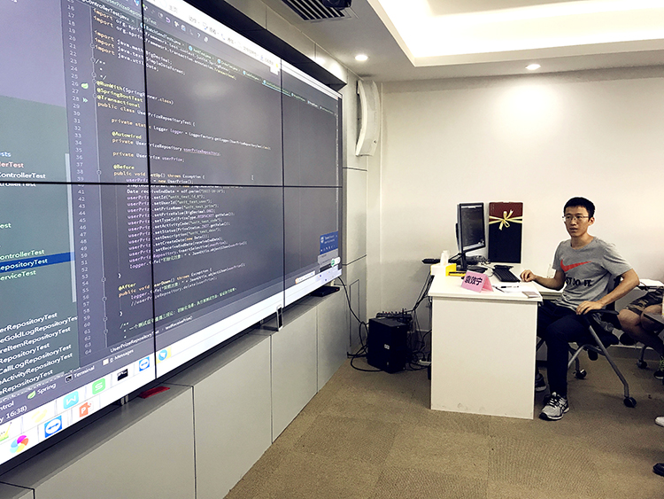
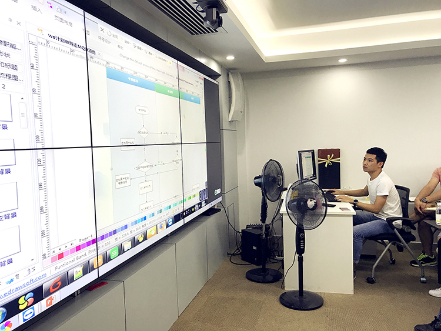
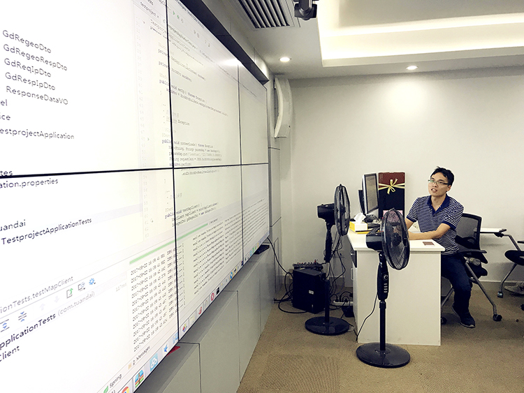
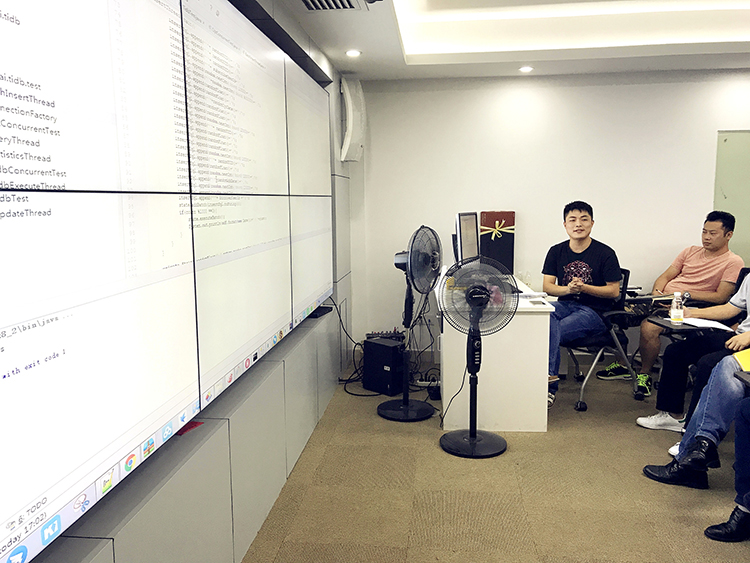
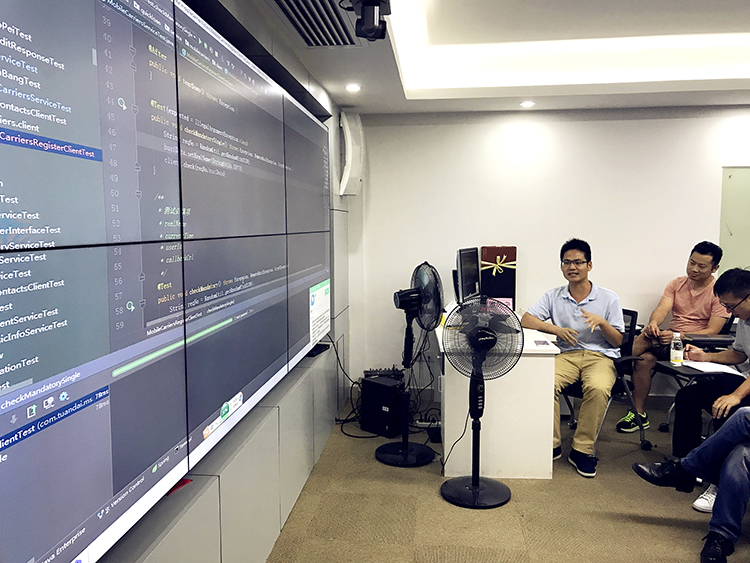
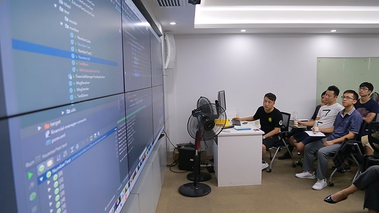
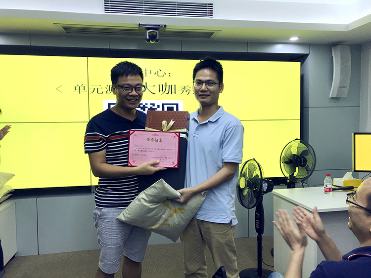
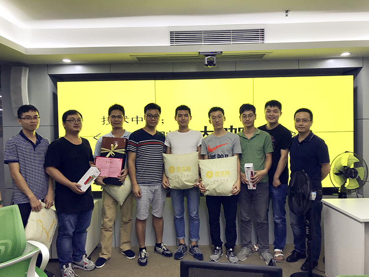
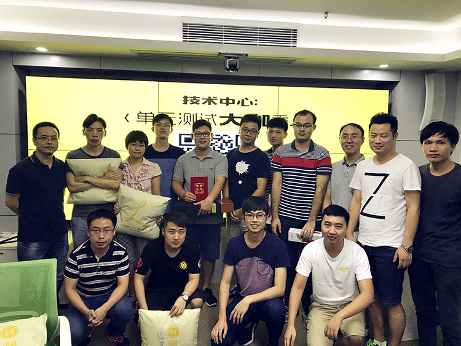

-
近期，技术中心正在大力推广研发过程的单元测试，以提升软件质量。为加快技术导入速度，营造浓厚的学习氛围并激发大家的分享意识，技术中心分别于2017年9月22日和25日在中心内开展了两场“单元测试大咖秀”竞赛活动，活动报名踊跃，名额瞬间抢空。参赛者show出各自的单元测试技能，专家评审一一点评，现场热烈互动，最后由专家评审团和大众评审集体投票，分别评选出两场竞赛的优胜者。
-
以下是活动的精彩景象：
一、第一场竞赛集锦

（点评专家：郭小飞、陈翔、崔永辉、刘斌、周美华、杨浩然、莫栋鸿、陈辟、秦杨升等）第一场参赛者——袁效宁（研发一部）
题目： JUnit4在Java项目中的运用介绍
专家点评：大部分演讲的内容都是JUnit4这个工具的用法和一些常用的边界测试，没有具体到团贷网相关业务代码的测试。对于public、protected、private方法应当都尽可能覆盖到，因为不管是哪种类型的方法，只要是和业务相关的代码，都需要纳入到测试范围。
-

第一场参赛者——陈剑烁（研发一部）
题目： JUnit4和Mockito在We计划申购服务中的运用
专家点评：断言需要与实际业务场景结合使用。
Mockito这套工具在业务场景的单元测试中尽量少用，因为编写业务场景代码相关的单元测试的时候应该尽量减少对原生代码的破坏（指在单元测试中重复编写业务逻辑代码），而且这种编码方式如果放到持续集成环境中运行也有可能会报错。
要梳理好业务流程，选好合适的工具，让单元测试代码更容易维护。
-

第一场参赛者——曾国正（研发三部）
题目：JUnit4 + Mockito在单元测试中的一些运用
专家点评：编写单元测试代码的时候，可以用断言来验证返回结果的期望值是否与我们想要的一致，断言跟日志结合起来使用是一个不错的选择。
Mockito这套工具在业务场景的单元测试中尽量少用，因为编写业务场景代码相关的单元测试的时候应该尽量减少对原生代码的破坏（指在单元测试中重复编写业务逻辑代码），而且这种编码方式如果放到持续集成环境中运行也有可能会报错。
要梳理好业务流程，选好合适的工具，让单元测试代码更容易维护。
-

第一场参赛者——章瑱彬（大数据部）
题目：单元测试在大数据部的一些应用场景
专家点评：单元测试的代码最好用JUnit4来编写而不是直接写到Main方法中运行。
在这个案例中涉及到了性能测试，但测试结果跟服务器的性能以及JVM的调优有关，所以普通PC的测试结果仅可用于开发代码的性能优化分析，不能作为线上环境的参考值。
单元测试里最好不写业务逻辑，否则当业务逻辑发生变动时，单元测试就会失效或者报错，变相增加代码的维护成本。
-
第一场参赛者——陈喜中（研发三部）
题目：以一个添加、更新用户信息的场景来编写单元测试
专家点评：测试过程中，我们不但要测试正常的场景，也要测试异常的场景，这个案例覆盖到了所有场景，但是有一点美中不足，没有用JUnit4提供的方法进行数据的初始化。
-
第一场参赛者——莫柱豪（研发三部）
题目：JUnit4 + Mockito在实名认证业务场景中的运用
专家点评：这个单元测试整体的思路比较清晰，但使用的工具（Mockito）有其优点，也有其弱点，我们需要根据不同的业务场景去使用合适的工具，而不是一直围绕着Mockito展开。
-

第一场参赛者——余绍武（研发三部）
题目：JUnit4 + Mockito在手机运营商认证场景中的运用
专家点评：对于需要调用天秤系统接口这类的场景，归纳起来就是使用哪类工具开发出测试桩，中心也可以考虑自己搭建一套测试桩平台来模拟接口数据，这样就可以降低测试工具和业务代码的耦合度，保证测试代码和业务代码之间的清晰度，也解决了第三方接口缺失的问题。
-
二、第二场竞赛集锦
（点评专家：郭小飞、崔永辉、刘斌、周美华、杨浩然等）第二场参赛者——钟振龙（研发三部）
题目：JUnit4 + Mockito 在登录场景中的运用
专家点评：演讲内容有点简短，清晰明了地介绍了Mockito在测试中的使用方式，但在业务场景的验证上仍需进一步加强，如果能对案例进行详细的分析和场景划分会更好。
-

第二场参赛者——王拓（研发一部）
题目：JUnit4在参数化测试场景中的运用
专家点评：对于入参的数据可以每个数组都写成一个方法，这样维护性就会强很多。
通过断言字符串信息来区分异常类型的这种方法较为少用，可以自定义各种业务场景所需要的异常类，并在适当的地方抛出，这样每种不同的异常情况都可以清晰地呈现出来。
-

第二场参赛者——赵丽君（研发五部）
题目：PHP的单元测试
专家点评：前面分享的单元测试方法没有脱离人工干预，但单元测试的自动化才应该是我们的目标，每个单元测试不能耗费太长时间；我们也需要选用好的单元测试框架来实现单元测试的自动化；不管用什么的编程语言和方式方法，通过单元测试解决的痛点都是一样的。
-
第二场参赛者——周富荣（研发二部）
题目：单元测试在银行资金对账场景中的运用
专家点评：针对这种场景，DB操作进行隔离开是正确的，否则一个单元测试要消耗很长时间。编写单元测试尽量把依赖关系抛弃掉，这样的单元测试才能反复高效运行。
对于单元测试的原则，建议去看《单元测试的艺术》这本书，单元测试并不能解决所有问题，我们要清晰单元测试的边界。
-
第二场参赛者——刘松锐（研发三部）
题目：JUnit4在用户借款场景中的运用
专家点评：这个案例做的好的方面是，把测试代码用列表方式呈现出来，以后维护相对容易。
对于数据的初始化，最好做一个数据生成模块，如果多人开发，就可以只维护一份代码，以后修改就比较方便。
-
第二场参赛者——邓容根（研发三部）
题目：代码和文档结合的单元测试
专家点评：这个案例做的好的方面是，把测试代码用列表方式呈现出来，以后维护相对容易。
把文档和代码结合在一起，这个想法很好，可以让代码更清晰和更易维护。但是这几个测试场景都没有针对返回结果进行断言校验。如果通过自动化来执行单元测试代码，不能很直观地发现问题。
-
第二场参赛者——钟伟杰（移动项目部，Android开发组）
题目：Android单元测试
专家点评：这个案例在单元测试的思路和原则方面有较好的体现。
单元测试通常是针对模块内部的代码进行测试，要尽量减少对外部接口的依赖，对数据库的依赖，否则运行起来会受到诸多限制，没法充分发挥单元测试的核心价值。
对于正常数据和边界数据的测试代码最好分开方法来写，以后维护起来相对容易。
-
第二场参赛者——叶沛钦（研发三部）
题目：JUnit4在身份证验证场景中的运用
专家点评：对于这种场景的测试，最好是从Controller层切入，如果只测试服务层的话，中间还有很多过程覆盖不到。
测试思路整体上不错，能按照流程图比较清晰地执行。
-
三、两场竞赛优胜者颁奖
第一场竞赛优胜者：余绍武
大奖：程序猿最爱之樱桃机械键盘在登录场景中的运用
-

第一场参赛者合影
所有参赛者获得团贷网精美周边奖品一份
-
第二场竞赛优胜者：钟伟杰
奖品：程序猿用了都说好的樱桃机械键盘
-

第二场参赛者合影
参赛者获得团贷网精美周边奖品一份
-
四、活动总结
郭总致辞：首先推荐大家去阅读《单元测试的艺术》这本书，里面的内容讲得非常不错。在开始单元测试之前，我们要先搞清楚单元测试到底能解决什么问题，不能没有原则和标准，更不能为了单元测试而测试，把代码越写越臃肿，维护起来困难。
单元测试代码不但要易维护，运行速度也要快。单元测试更要与自动化测试结合，通过集成到Jenkins实现自动化运行，无需人工干预，从而实现高效运转。如果单元测试需要消耗很长时间，就会失去单元测试的核心意义和价值。
希望通过这次学习和经验分享，赛后参与比赛的小伙伴可以在此基础上总结出一份单元测试的原则和标准供大家学习参考，也希望大家持续重视单元测试。
本次竞赛圆满落幕，后续技术中心将会继续组织各类分享、竞赛，打造学习型组织，机会多多，小伙伴们尽请期待。
-
第二场参赛者——赵丽君（研发五部）
题目：PHP的单元测试
专家点评：前面分享的单元测试方法没有脱离人工干预，但单元测试的自动化才应该是我们的目标，每个单元测试不能耗费太长时间；我们也需要选用好的单元测试框架来实现单元测试的自动化；不管用什么的编程语言和方式方法，通过单元测试解决的痛点都是一样的。